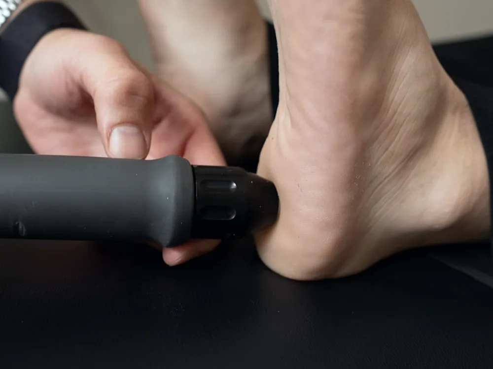

Преимущества
Основные преимущества рефлексотомии
Ниже - четыре вещи, ради которых метод чаще всего и выбирают: как проходит сама процедура, что входит в программу резорбции грыжи, чего ждать при пяточной шпоре и что даёт рефлексотомия при заболеваниях суставов.
Как проходит
Малоинвазивная и безопасная процедура
Рефлексотомия проводится через небольшой прокол без хирургического разреза. Перед воздействием применяется местное обезболивание, поэтому процедура обычно переносится комфортно. Ощущения могут различаться в зависимости от чувствительности пациента и зоны лечения.
Процедура проводится в клинических условиях с использованием одноразовых стерильных инструментов. Перед лечением врач изучает диагноз, результаты обследования и исключает противопоказания.
После процедуры не требуется длительная госпитализация или продолжительная реабилитация. Большинство пациентов могут вернуться к привычной активности, соблюдая рекомендации врача.

Грыжа
Программа резорбции межпозвоночной грыжи
Для пациентов с межпозвоночными грыжами в клинике Reflex предусмотрена индивидуальная программа резорбции грыжи.
Резорбция - это естественный процесс постепенного уменьшения грыжевого выпячивания. Задача программы - создать условия для восстановления организма, уменьшить воспаление, мышечный спазм и болевой синдром, а также улучшить подвижность.
Программа может включать:
- консультацию и осмотр врача
- изучение МРТ
- авторскую рефлексотомию
- индивидуально подобранные дополнительные процедуры
- рекомендации по нагрузке и восстановлению
- наблюдение врача
- контроль состояния и оценку изменений в динамике
Для оценки результатов врач может рекомендовать контрольное МРТ. Скорость и степень уменьшения грыжи индивидуальны, поэтому обещать полное рассасывание каждому пациенту нельзя.
Пяточная шпора
Результат при пяточной шпоре после первой процедуры

При пяточной шпоре многие пациенты отмечают уменьшение боли и облегчение при ходьбе уже после первой процедуры рефлексотомии.
Врач воздействует непосредственно на болезненные и патологически напряжённые ткани в области пятки. Это помогает уменьшить боль, снизить напряжение тканей и облегчить опору на стопу.
Выраженность и продолжительность результата зависят от состояния пациента, длительности заболевания и соблюдения рекомендаций врача.
Суставы
Помощь при заболеваниях суставов
Рефлексотомия применяется при артрозе, коксартрозе, боли и ограничении движений в коленных, тазобедренных, плечевых и других суставах.
Процедура помогает воздействовать на болезненные и спазмированные участки мягких тканей, окружающих сустав. После лечения пациенты могут отмечать:
При заболеваниях суставов методика подбирается индивидуально с учётом стадии артроза, результатов обследования и общего состояния пациента.
Коротко
Почему пациенты выбирают рефлексотомию
Основные преимущества авторской методики:
- малоинвазивное воздействие без большого хирургического разреза
- местное обезболивание для комфортного проведения процедуры
- индивидуальный выбор зон лечения
- воздействие непосредственно на болезненные и напряжённые ткани
- отсутствие длительной госпитализации
- короткий восстановительный период
- возможность почувствовать облегчение уже после первой процедуры
- применение при грыжах, протрузиях, пяточной шпоре и заболеваниях суставов
- возможность включения в программу резорбции межпозвоночной грыжи
- проведение процедуры в медицинской клинике под наблюдением врача
Методика «Рефлексотомия» внесена в государственный реестр объектов авторского права (№ 77379) и зарегистрирована как товарный знак (№ 116197). Посмотреть документы
Результат лечения индивидуален и зависит от диагноза, стадии заболевания и особенностей организма. Перед процедурой необходима консультация врача.
Приём
Как попасть на приём в Reflex
Оставьте заявку и опишите, что беспокоит. После отправки откроется WhatsApp - туда можно приложить МРТ. Врач посмотрит на приёме и скажет, показана ли рефлексотомия именно вам.
Первичным пациентам: компьютерная диагностика на БРТ-аппарате и приём врача клиники
5 000 ₸ 25 000 ₸
Приём ведёт врач клиники. Диагностика не заменяет обследование по назначению.
Алматы, ул. Жарокова, 137, ЖК «Арай», блок В2, 2 этаж